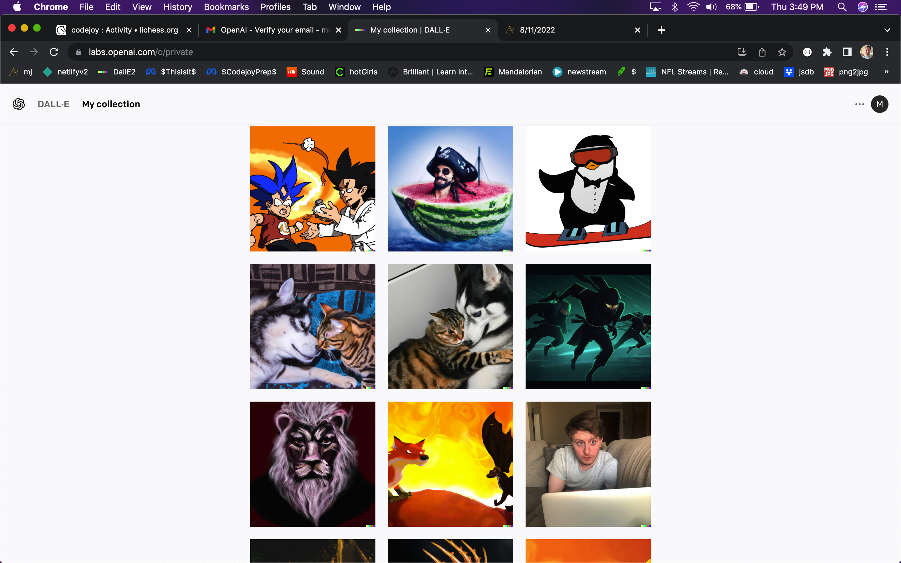
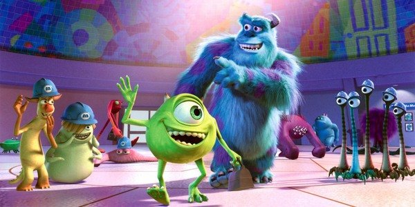
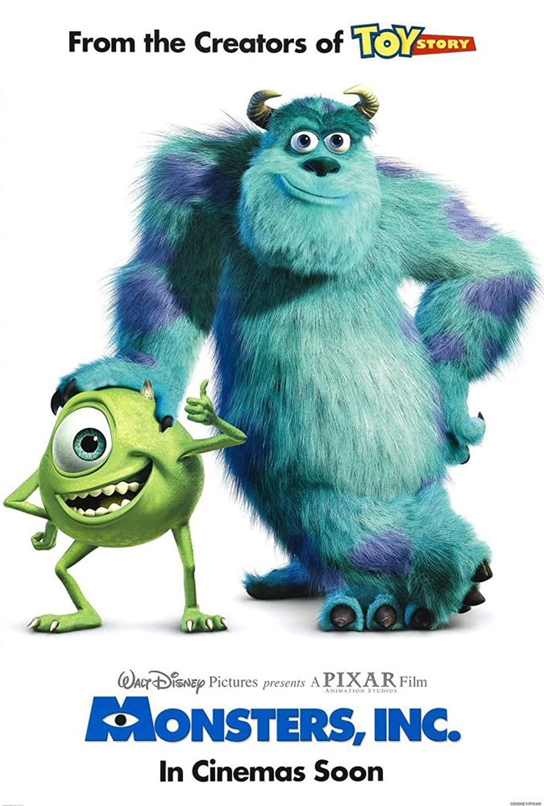

Dark One
By the time you realize we're fighting, the knife's already in your neck.
8.1+.25
Ecnarelot
Credit to Era7 for the artwork on Deviant Art
Ecnarelot is the name of my dragon in my story of Cloudland
It's tolerance spelled in reverse to hide the extra meaning to the story.
I believe tolerance is mistaken for a virtue, when really intolerance is what we need as a people, and as men.
In Cloudland, Elam slays Ecnarelot, and it's my favorite of the dragon's names. I still plan on getting a bearded dragon and naming him Ecnarelot. But for now, you have this image.
I pronounce it "Ec Nare a lot" which sounds like "I care a lot"
8.2.22+
Cancer Theory - Adampants
In trying to improve my video editing skills I went back and used a clip from my whiteBloodCell video.
It's got an an intro and a cool outro I like. I've never done this before and it feels good except for the fact that it's got a free trial watermark and I don't want to pay for the new software because my job offer as an insurance agent is still pending a background check that's taking forever.
8.30.22
My Cod Commentary Meta Mr Beast Video
Mr Beast used to have call of duty gameplay going while he talked about stuff in his videos and so I thought I'd try that out.
I have better clips than that but I think these are nice to look at while I'm talking.
It's Meta because it's a Mr Beast style video talking about Mr Beast. Enjoy!
8.29.22
MrBeast Savage Level 9000
Today I was studying Mr Beast's old youtube videos to see when they started to get good and this video was hilarious.
8.29.22
Chess
I beat a 2140 with black. My highest rated victory.
This was a rapid game, but I also just hit my all-time high ranking of 2084 in classical. Still chasing 2100 though!
8.28.22
MidJourney
Simply unbelievable AI tool that generates images from text.
"Jellyfish astronaut with evil intentions, purple lightning in the background"
Rainbow exploding out of crystal ball
ink in water in the shape of a black dragon breathing orange fire
a good looking girl giving into her devilish side, red lips
a hovercar flying over a futuristic city with alien angels floating by
A white cell of God's body saving the world
They wouldn't let me say "white blood cell" because "blood" is prohibited.
8.15.22
Westlake Fantasy Football

Just spent hours updating the /fantasy with a /0 for week 0 analysis post-draft review.
8.14.22
Dall.E 2

"Superman getting rejected by a pretty girl, painting" is what I typed and this is the image the AI generated within seconds.
Dall.E 2 has just been released to a select portion of the population.
It lets you enter a prompt of any text you like and generates images for you.
I was on the waiting list and I think I now have exclusive access to this revolutionary technology.
It's great for a number of reasons. 1. It shows you that it understands texts and also images of words. 2. A writer can now just get his or her own illustrations prepared in seconds by the AI. For example, I wrote a little story with a character named Relik who is a man with the face of a lion and a gray beard or mane. I can type that prompt into the AI and it gives me a great image.
Some of my favorite prompts I've given so far are "Goku teaching a drug to go supersaiyan"
"The brain of a dragon"
"A blue Pikachu using thunderbolt"
8.11.22
Totalitarism's Fantasy Team
QB Mass Media / Social Media / Hollywood
RB Terrorism
RB Covid
WR Pharmaceuticals
WR Psychiastrists
TE Smart Phones / Surveillance
FLEX Pornography
The foundation of a good fantasy football team is a Running back 1 and a running back 2. They are the engine that drives the success of the team.
Modern Totalitarianism has 2 engines or "running backs" in this metaphor. Terrorism, and Covid. Covid is the RB2. Terrorism, is the illuminati's bread and butter. They use the threat of terrorism to go to war and spy on their own citizen and get away with whatever they want in the name of "NATIONAL SECURITY"
Covid, the RB2, is the other main way to gain power. They use covid to take away our rights in the name of "PUBLIC SAFETY"
Then you have the Elite Wide Reciever 1, Big Pharma. Big Pharma has half of the population popping pills everyday, believing they'd be worse off without them. These masses are dependent upon the pills they're getting and they are basically afraid to face life without them.
This goes hand in hand with the WR2, Psychiatrists, who prescribe these medications and convince the masses they are mentally ill. Then you have the bench wide receivers which would be other cogs in the wheel like lobbyists but that's not as important.
TE is the smart phones everyone carries around, with microphones, cameras, and location tracking technology that the government uses to spy on everyone, all of the time. Not to mention the Alexas people put in their homes. "Big Data" could be another name for the tight end. Also you have the added element of people staring at their phones all day. I like my new google pixel, I'm just saying the Government likes it too.
Then the winning FLEX option is Pornography. This quells the masses, especially men, and makes them impotent and easy to rule over. None of us really feel like doing anything when porn is so easily accessible and is free in high-definition with barely any ads. It's almost as if the government pays for it. It's a nice way to mind control.
That is how Totalitarianism is going to try to win the championship. If I had to construct a team that beats it it would be something like...
Rebel's Fantasy Team
QB Jesus
RB Love
RB Freedom
WR Physical Health
WR Mental Health
TE Responsibility
FLEX Creativity
I forgot to mention, the quarterback of Totalitarianism's team is Mass Media and Hollywood and Social media and the fact that we are bombarded with propaganda and woke agendas that try to make men into women and women into men and good into bad and bad into good and upside down into right side up, etc. They distort the truth with lies and try to make lies the truth. They try to make light dark and dark light. The only way to defeat this is by believing in God and spending time on your spiritual self whether it's asking questions or strengthening your faith.
Love and Freedom are the driver's of the resistance.
Peace!
08/21/21
Algo Practice and Step 12
I try to explain how I solved my most recent algorithm.
I was getting discouraged applying online for coding jobs so I thought I'd try solving an "easy" problem on leetcode.com but it was anything but easy.
I did ultimately prevail with a solution that was accepted. So at least I ended the day with a win, and it was fun to have a problem to chew on during my AA meeting.
I'm on step 12 now! and God has given me a sign that I'll be able to sponsor someone and help them. I rolled a die and said to myself a 6 would be the sponsee does well and 1 would be he doesn't. I got a 6!
I really hope I can help someone out, which would make my past mistakes hurt less if I can use my wisdom to help another. I also hope I can keep stacking small coding victories until I fulfil my potential as a software engineer. Selah and God Bless!
8.1.22
Totalitarism's Fantasy Team (Post of the Month)
QB Mass Media / Social Media / Hollywood
RB Terrorism
RB Covid
WR Pharmaceuticals
WR Psychiastrists
TE Smart Phones / Surveillance
FLEX Pornography
The foundation of a good fantasy football team is a Running back 1 and a running back 2. They are the engine that drives the success of the team.
Modern Totalitarianism has 2 engines or "running backs" in this metaphor. Terrorism, and Covid. Covid is the RB2. Terrorism, is the illuminati's bread and butter. They use the threat of terrorism to go to war and spy on their own citizen and get away with whatever they want in the name of "NATIONAL SECURITY"
Covid, the RB2, is the other main way to gain power. They use covid to take away our rights in the name of "PUBLIC SAFETY"
Then you have the Elite Wide Reciever 1, Big Pharma. Big Pharma has half of the population popping pills everyday, believing they'd be worse off without them. These masses are dependent upon the pills they're getting and they are basically afraid to face life without them.
This goes hand in hand with the WR2, Psychiatrists, who prescribe these medications and convince the masses they are mentally ill. Then you have the bench wide receivers which would be other cogs in the wheel like lobbyists but that's not as important.
TE is the smart phones everyone carries around, with microphones, cameras, and location tracking technology that the government uses to spy on everyone, all of the time. Not to mention the Alexas people put in their homes. "Big Data" could be another name for the tight end. Also you have the added element of people staring at their phones all day. I like my new google pixel, I'm just saying the Government likes it too.
Then the winning FLEX option is Pornography. This quells the masses, especially men, and makes them impotent and easy to rule over. None of us really feel like doing anything when porn is so easily accessible and is free in high-definition with barely any ads. It's almost as if the government pays for it. It's a nice way to mind control.
That is how Totalitarianism is going to try to win the championship. If I had to construct a team that beats it it would be something like...
Rebel's Fantasy Team
QB Jesus
RB Love
RB Freedom
WR Physical Health
WR Mental Health
TE Responsibility
FLEX Creativity
I forgot to mention, the quarterback of Totalitarianism's team is Mass Media and Hollywood and Social media and the fact that we are bombarded with propaganda and woke agendas that try to make men into women and women into men and good into bad and bad into good and upside down into right side up, etc. They distort the truth with lies and try to make lies the truth. They try to make light dark and dark light. The only way to defeat this is by believing in God and spending time on your spiritual self whether it's asking questions or strengthening your faith.
Love and Freedom are the driver's of the resistance.
Peace!
08/21/21
The Secret to Greatness
"The secret to greatness is progress." - Ryan Holliday. I love this little video by Ryan, a philosophy author, because one cannot be great without first making progress. Therefore if I focus on progress, I don't have to worry about greatness. It will just come. Tom Brady is the epitome of progress. He is great because he works hard and tries to get better every day. Same with Kobe Bryant or any great athlete. All great athletes are focused on their progress.
If I have achieved greatness or close to it in any arena, it is by accident and a product of my focus on progress in that area. I didn't want to be a great chess player. I was just fascinated on if I could keep getting better. By enjoying the progress, I have reached a higher level then I ever thought possible.
The area of progress I'd like to focus on right now is my physical activity and health. I know I've been saying that for a while but I am losing weight and I also think focusing on progress is the key to getting where I want to be physically.
Sometimes my blog posts are not very good or well thought out, like my last one, and sometimes I'm just writing to write, or sharing a clip I found, like this one, as if it's a facebook status. (I don't have facebook right now). But, other times I really have something important to share, and it is carefully planned and just dying to come out of me into the world. I hope you enjoy those types of posts when you explore my blog. A couple that come to mind are "Luciferianism 101" where I break down what satanists actually believe philosophically, and "Second Grade" where I stop trying to convince the reader of conspiracies and instead move on to what it all means if you actually embrace it.
This vide is so on point. "If I wanted to follow the mob I wouldn't have become a philsopher"
"If I wanted to write what everyone else was writing, why would I have become a writer?"
Makes me think of my fantasy hot takes or these blog posts. I like standing out with my own opinion. And if my opinion is shared by you, there's no need for me to share it with you. I'm more drawn to sharing new ideas that contradict the status quo.
Peace and Love, - Max.
08/31/2021
Energy
I have a group text with 5 friends. I started it the other day to share a video of the riots in Austrailia against lockdowns.
The group text is kind of a 3 on 3 and I want to use the word battle royale although that now refers to last man standing modes in video games.
3 of us are unvaccinated and against the covid vaccine. The other 3 are vaccinated and for the vaccine.
It's truly an incredible disagreement because we're all friends and yet each 3 think the other 3 is completely wrong. It's an uncrossable chasm between us, if we focus on it.
But it occured to me today that there are lies on both sides of the argument. Like whichever way you go, you're stumbling in the dark. The important thing is to rise about it and have a good attitude.
I think "vibes" and good energy are extremely important and powerful.
I think we have the ability to sense the energy of other people without them saying a world.
When it comes to my disagreement with my friends, I'm open to the possibility that there exist two worlds simultaneously. One where I'm right, and one where they're right. We're somehow living in both worlds at the same time, and then the important think is how we behave.
I'm going to try to keep my energy up and good vibes going. Can an apocolypse get you when you're in a good mood? Can it even occur in your reality when you're vibing?? Don't things always seem to have a chain reaction. You're at the best party, and the best song comes on, the girl you like comes in... or you're having the worst day ever, you're signif other breaks up with you, bad hair day, and a flat tire and your phone's dead?
These life events seem to have a sort of chain reaction and right now I'm actually pretty confident the asteroid cannot hit you from outer space if you're at the beach having fun. Shit only seems to hit the fan when you go down that negative energy path. Of couse this is just a wacky theory but I think we control our reality a lot more than science leads us to believe.
I've said before sometimes I close my eyes and decide how it's going to be before I go in somewhere and then it comes true. Not everyone is slave to your thoughts but maybe you only deal with the versions of people that you bring into existance. Like maybe there's 20 versions of me each day and if you're joking around you experience the joking version. Meanwhile I'm having another experience. I really think there's more to it than just objective reality, "I'm right you're wrong" type of science.
Maybe it's a group project. We're all consciously creating a group experience, I don't know. It doesn't seem to explain how impactful we can be when we really try to be. I'm almost afraid of my own power. If I really set my mind to something I can usually achieve it, but sometimes I don't even have the courage to do so.
Anyway I'm not even sure there's one correct way to look at things, so I'm not going to waste my time convincing people who don't want to be convinced, and I'm not even going to think I'm right and they're wrong. I would like to be left alone when it comes to government mandates and guilting people into the vaccine, but I'm not going to focus on what I don't want to happen because that seems to bring it along faster. I'm going to focus on what I do want to happen. I'm going to use my power to put out good energy. I'm going to bask in the good energy and think more about solutions than problems.
I get carried away talking about what I don't like. I thought it was necessary to raise the alarm and point out the negative aspects to the things society is pushing towards. But I think now the better strategy is to ring the bell on how great other things are. I'm going to focus on what people are doing right, and bring more of that into society.
I have so many great things to be thankful for in my life right now. When I was in intensive therapy one of the things my therapist told me to do was list out 5 things I was grateful for every day. It really does help.
- I'm grateful for this website
- I'm grateful for my friends
- I'm grateful for my coworkers
- I'm grateful for my new google nest
- I'm grateful for my roomates
- I'm grateful for my creator
08/27/2021
You either get it or you don't
I subscribed to this chick's channel because I once saw a video by her explaining the crisis of masculinity and I thought it was cool seeing a girl speak up in our defense.
I've actually already posted one of her videos on this website. Now I see that she released a video about modern tyranny.
Listen, if America wanted to take out the North Korean dictatorship we would eviscerate them. The only reason a county like that can exist for so long without challenge is backing from seriously strong governments like China or the US. North Korea is one big mind control experiment if you listen to King Yun Park's story of how she survived and escaped.
North Korea isn't the exception. It's the rule. We're just less brainwashed here, but make no mistake, the majority of people even in the freeest country in the history of the world are brainwashed by their government.
It really is scary when you can see it in action, creeping closer to your daily life. It's even scarier when most people are oblivious to it. However, when you really know what's going on, there is comfort in Jesus Christ. There's simply no way to rationalize the evil pervading here without the influence of the devil or something supernatural.
Maybe you're waiting for me to provide proof of what I'm saying. I suggest you go to the start of my blog when I was still interested in doing that or trying to convert the non-believers. If you can't see the intrusion of government against it's own citizens in the last few years then you are truly blind.
Tyranny always comes in the name of something else. The Reign of Terror in the French Revolution was caused by none other than the "Commitee of Public Safety" and Maximilien Robespierre. It's easier for them to make it seem like it was your idea to lock yourselves down. The truth is they control all those celebrities who came out day one in support of social distancing, lockdowns, and business closures. I would say they pay them, but it's almost more likely those creeps don't even need money, and are controlled by other means such as shapeshifters or aliens or demons. I know that sounds like it's crazy but it's actually way more crazy to think this is all just people's natural response to covid. This is a government power grab and control structure meant to last. And everytime you think it's going away they just release new headlines and stats and stamp their foot down again.
They control the press. They control the narrative. They control the opposition. They control the platforms on which you can discuss anything. This website is purely me. I make no money, in fact, I lose money doing this. But I love the truth. I am a slave to the truth and love. I love Jesus Christ and God and I will not stand idly by as my freedom is taken away from me bit by bit.
The terrifying thing is that it will be regular people who try to take it from me. They don't realize they're playing into the devil's hands by shaming the unvaccinated, or unmasked. In the video I posted it stated how masking children in a classroom causes language and health problems. Not only does the government not care about that, they actually prefer it. They want more idiots to dominate. The last thing they want is to have dominant literate articulate masculine men challenging their authority, especially those like me who have the ability to generate their own version of the press online.
I wish I had better news, I really do. That's why I consistently bring up Jesus. The evil is overwhelming and the only option of avoiding despair is having a personal relationship with your higher power, in my case Jesus, and trusting that relationship so you don't collapse in despair.
Forcing these restrictions and mandates onto children when they have no chance of dying from Covid is pure evil and by design. It gets me fired up when they go after kids. All I know is they are no match for my creator, and they will burn in hell the instant God deems it necessary. God Bless.
David Icke
You may have forgotten about David Icke because he's been censored from facebook and youtube, or maybe you consider him a crackpot because he used to talk about Reptilians, but if you make it through the cheesy ad at the beginning of this video, you realize he is a modern day einstein. His description of reality is breathtaking. He makes perfect sense. He's eloquent. It's just a shame people put him into a box when he actually is such an articulate and brilliant guy.
Last thing I want to say is about inner truth. Sometimes my friends and I will get into arguments about information and disagreeing about what we should take away from it. In the end of this Video David Icke points out the seperation of the mind from the spirit. The mind is at the mercy of whatever information it's presented. The spirit is not. For example, let's say you have a little daughter. She needs a baby sitter. You interview a guy to babysit her but he creeps you out. It doesn't matter how many statistics show you how he is the best babysitter and has the highest rating, or least likely chance to abuse her. If he creeps you out, that's the end of it. You don't need to dig into information, you intuitively would never let the creep watch over your daughter. Similarly, it doesn't matter what covid info is released, I intuitively am creeped out by the government and media and don't care what they say, I know intuitively I am okay to walk outside without a mask and shake a strangers hand and look him in the eye. I know it. You might say I'm blind or reluctant to take in new information and adjust but the truth is there are some things that are unmodifiable, like switching from being creeped out by a guy to letting him babysit your daughter. No amount of contrary information from the press or 5 star reviews from his past clients will dissuade you of your inner truth. And if it does, and he abuses your daughter, you'll never doubt yourself again. I don't doubt myself, and I don't waste my time calculating carefully chosen manipulated information. I know by inner truth it's okay to not get vaccinated and not wear a mask and not want to be locked inside by my government's mandate. Thanks, Max.
08/26/21
Revisiting Monster's Inc
I haven't seen Monster's Inc since I learned Satan was running the world. Hear me out. Disney+ let's you stream Pixar movies and they've updated the animation in them.
I put on Monster's Inc just to have a good time, because I remember liking it, but I enjoy watching it with a certain lense, looking for "truth drops" as the youtuber quantum of conscience would say.
I look for hidden meaning, and symbolism. Opening scene it's 6:00 o clock, the main character wakes up and has devil horns, and his friend is one big eyeball. The Devil horns are a shoutout to the devil and the eyeball guy is a representation of the all-seeing eye. Couldn't find the 3 6's.
Then we get into the plot and it reminded me of free energy and covid. In the plot, the monster city is said to be powered by children's screams, so monsters are trying to scare kids just to take their energy. The monsters also have been told by the CEO that children are extremely deadly and touching them is contagious and deadly.
The monsters go through different doors which act as portkeys and take them to the real world. One day a monster goes through and comes back with a sock on his back.
Everyone freaks out about the sock and an alarm goes off and the CDA (CDC) comes in to isolate and destroy the contaminant. It's comedic and complete overkill. The kids are not even contagious. The CEO just wants his employees to believe they are contagious so he can keep his scam going. His scam is that a children's laughter can power 1000x more than their scream, but if that secret gets out he won't make any money from his corporation because it will be basically free energy for the whole town with one laugh. That is a truth drop because it's why we run on gas and they hide free energy from us. There's no money in free energy for all. There's lots of money in gas.
The other truth drop is how they treat the monster who had the sock on him, and how they treat the child who escapes into the monster world. They shave the fur off the monster and give him a shower like in a zombie movie. They disrespect him and leave him naked in front of everyone and then leave. That's how people can be treated if we let covid policing go too far. Loss of human dignity in the name of stopping the spread of a contagion. And it's all based on a lie.
When the girl comes into the monster universe all the monsters have been so brainwashed that they run away screaming... They've been conditioned by lies to the point of ridiculousness. A little girl saying "boo" terrifies them even though they're big scary monsters. This is like people being afraid of a handshake, hug, or an unmasked unvaccinated person sharing a room with them. Or even someone with Covid.
Am i saying they knew back then about covid, and monster's inc is predictive programming? Maybe. I mean the Child Disinfeciton Agency is clearly a play on the CDC and the scream/laugh dynamic is pretty clearly a reference to the free energy conspiracy.
And look who made it. Disney. If anyone's capable of putting out predictive programming, it's them.
Also the entire idea of a world we can't see feeding off our negative energy is perfectly reasonable to me, so the setup to this movie may be a metaphysical truth. Lastly, Mike's love interest is a reference to Medusa and they love their Gods and Goddesses.
08/18/2021
We Happy Few
I had to post this team review here because it contains conspiracies and I want to keep my fantasy webpage free from those.
You really can't feel good about ARob until Fields takes the job from Dalton. Meanwhile you have Dhop drama with the vaccine and Thielen may also struggle with Kirk Cousins coming out against the vaccine. I hate to say this but it's hard for me to imagine a qb coming out against the vaccine and then having a great year. The system we're inside of chews people up and spits them out when they say a bad thing about the vaccine.
DeAndre Hopkins deleted his tweet about contemplating retirement and replaced it with a cryptic tweet, "Freedom?". He wanted to retire because he didn't want to hurt his teammates by having them forfeit games because the nfl rules are different for vaccinated vs. unvaccinated players. Let me decrypt that tweet for you. He posted on social media about how he doesn't want to take the vaccine and then he got a call from his agent or someone from the team saying... Take that down.. or "we've deleted that tweet you sent out, here's why..." Deandre learned that his opinion is not welcome on this matter and he should shut his fucking mouth, so he said, "Freedom"? questionging freedom's very existence because we are not free anymore as we have no freedom of speech. We only have freedom of politically correct speech. People are censored left and right, including myself from youtube on multiple occassions with multiple accounts.
I just want to say that the entire idea of having a legal document stating how unvaccinated persons will be treated differently from vaccinated persons is a very dangerous and unfair distinction. I understand it's done under the pretense of safety and logistics but the reality is we've created two new subclasses of people. The "Vaxxed" and the "Unvaxxed". This will inevitably lead to discrimination and conflict and is an evil idea or a stupid one.
If the vaccine was safe and effective they wouldn't need to say that every 5 seconds.
Ask the league lawyer what he thinks but I think any law that makes distinctions between unvaccinated individuals and vaccinated individuals is a dangerous precident for discrimation. It will lead to medical tyranny, where you have to "Take your joy" like in the brilliant indie game "We Happy Few" You don't want to live in a world where you're ordered to take certain medicines. That's a dictatorship.
08/17/2021
Little things
Really like this short talk from Michael Phelps. It never occurred to me that he wasn't just the best swimmer and won all the golds. First he had to set out to accomplish something no one else would even try.
08/16/2021
Karate
I'm watching the Karate Kid right now. Haven't seen it in 10+ years. Jonathan Adampants used to make videos about it so I know it contains some important truths. I've decided I'm going to draft Davante Adams and name my team Davante Adampants. I also want to learn karate.
I've been so frustrated lately. I think part of it is not being able to sleep in my room and having to sleep on the couch while the carpet is replaced. But honestly I've been having trouble with my emotions lately even before that. I'm glad I have emotions, sometimes I feel like there's zombies around me wearing masks out of choice and popping Anti-Depressants every day. At least I have emotions, but now I need a way to channel them. I know physical activity is necessary but I keep avoiding the gym.
My mom is a black belt and I've taken a few karate classes before. I remember what it was like. I think I could use that structure. Too bad everyone's such a moron with masks. Maybe I'll just train myself.
I'm so angry all of the time. As compassionate as I am at times toward humanity and the homeless and other people, part of me hates them for their ridiculous beliefs. Not only are most people completely insane, but they think I'm the one who's insane for not wanting to wear a mask or take a vaccine. People think Chick-fil-a was never chic-fil-a for me and I'm just "misremembering" or it's "not important". It honestly pisses me off. I really think excelling in a physical art like karate and harnessing my competetive spirit could do wonders for my mental health. Joe Rogan often talks about martial arts. I'm not sure Karate is the one I will like the most but I'd love to explore the martial arts while I'm still young. 29 ain't too old. I also think the process of weekly classes could encourage me to lose weight.
God Bless
08/12/2021
Best Of
I was just rereading my blog and I think March has a lot of great posts.
- Thought Police -- 3/05
- Taxation, War, the Devil Farmer, The Game of Money, Economic Priests, and the Solution -- 3/13
- Second Grade -- 3/15
- Recruitment Theory -- 3/16
- And the Oscar goes to... -- 3/23
- The Phantom Enemy --3/24
- Why I'm Anti Anti-Depressants -- 3/02
Then there's a couple good ones in April
- Godzilla vs. Kong -- 4/08
- White Blood Cells-- 4/14
May I interest you in some more blog posts?
- Luciferianism -- 5/13
- Gain of Function-- 5/12
- Guest Blog Post-- 5/05
- Gain of Function-- 5/12
- Get the hell out of here -- 6/04
- Alright Alright Alright-- 6/16
Enjoy!
08/11/2021
California
New song I actually like
08/10/2021
Perfection
In my last post I blamed myself for the smell but it's clear now that it's some sort of dead animal inside of my bedroom wall. I am going to use this experience to never take scent for granted again. I have vowed to myself to keep my bedroom henceforth smelling like a paradise. I slept on the couch last night and I have given up trying to spruce up the smell. I need the apartment people to come in and fix it. I'm basically living in the living room now, but the girls are out of town so it's not a big deal.
I just went 35-0 in Call of Duty: Cold War. I've gone 35-0 before with an MP7 in MW3. This is with an MP5 and the Carv Tactical Rifle. It's a pretty dominant combination as you'll see. Putting music to this will be difficult because youtube is an asshole. I actually have to use bitchute for pretty much everything now whether it's a call of duty montage or a conspiracy video. They removed my last video called "Vaccine Treason"
08/09/2021
It ended up just being the carpet and I got that replaced and it spelled fine. -6.8.22
Smells like an Idiot
New song... my room smells terrible and I'm trying to make it smell better.
I washed everything and threw everything else out. I am leaving the windows open and febreezing... it's interesting the metaphysical implications of getting rid of a bad smell. It's kind of like how darkness and light are often talked about. Light expels dark and dark is the absense of light. The bible talks about this often, how the evil people love the dark and how god will bring everything into light in judgment.
Getting rid of a bad smell is different. It's not as simple as light. I have to find the root of the smell, and get rid of whatever is actively causing it. (like a wet towel) Then I have to allow the stale air to escape out the window. Then I have to install an air freshener and walk around febreezing. It's so bad. It's starting to smell a little better because I have done everything I could possibly think of.
I got rid of my air mattress and went back to sleeping on the floor. I think the air inside the mattress was one of the causes. I put all my towels out of my room other than one that is hung up and 2 that are just washed and dried.
If I can't control my environment I can't control very much. I at least smell good personally. My guitar strings are new, they used to smell. My longboard is new... my blanket is washed. My carpet was just cleaned last week. I really want to be able to control my environment before I expand outward. I also want a good home to bring girls back to. I'm so happy to have been alerted to the importance of scent. I will never take it for granted again. I hit some sort of threshold and now smell is super important to me and I can't wait until it smells fantastic in here. I've worked hard on it all night other than hanging at the pool with my roomates sister tonight until the security guard kicked us out. It's really amazing living here. We even just got a brand new washer and drier installed so there's no reason I shouldn't be able to smell great and have a great smelling room.
Anyway, I'm just an idiot who can barely control the smell of his own room or self, and orders doordash to work when I'm at home. That is the inspiration of the song. PEACE
08/2021
It ended up just being the carpet so it wasn't really my fault and I got that replaced and it spelled fine. -6.8.22
Candace Owens is the shit
I really like Candace Owens because she makes sense and calls out the brainwashing in our society and schools.
08/05/2021
Almost Pro
I really enjoy winning in chess and winning in call of duty. These activities are extremely engrossign and competitive but also easy to do, thanks to online gaming. If I want to play some one in my level in chess in real life I need to drive to Old Agoura to play this Russian who is better than me, or I'd have to travel to a tournament of some kind.
With Call of Duty it's rare to have a friend as good as me and even then split screen is not as fun as online because there is screenlooking.
I truly enjoy these 2 activities but I think I'd like to get good at something else. I'm not actually the best ever in cod, I just had GOAT on my mind that day because of a Quantum of Conscience podcast I was listening to.
08/04/21
Levels
There's different levels of understanding reality. I'm going to explain them.
Level 1 - Fundamentalists
Religious Fundamentalism is the 1st level of Truth. It doesn't matter if they're Muslim, Christian, Catholic, Protestant, Jewish, Buddist, and any other. All of these groups suffer from the same groupthink and logical fallacy of thinking everyone at their church is correct and everyone at the other place of worship is incorrect.
These types of groups lack the ability and opportunity to think critically. They are buried in shame and do not ask obvious questions or address clear contradictions or counter-examples to their dogma. These types of people lack the courage to wrestle with their own doubt, and cling to books and rely on preachers to guide them like sheep. These are the types of folk who would donate large amounts to their church and even fall for indulgences back in the day (paying money to be forgiven of sin by the church) Donating to support a church sounds harmless, benevolent even, but this is only within the first level of understanding.
Level 2 - Atheists
Athiests have the good sense to run away from level 1 fanatics. They want no part of religion. They're well aware of the lack of critical thinking within fundamental religion and see themselves as above those equally mistaken groups, and they are indeed above them. An athiest will actually examine the logical structure of religious belief. They use their brains and actively pick the bullshit apart. Bravo. Congratulations on passing to level 2 of God's game you're playing, but there's much more.
If an athiest walks into a person with a level of understanding above them they will actually confuse them with a level one person. The true athiest sees himself or herself at the top, just like the level 1 people do. In fact, Athiests are equally as dogmatic as fundamentalists in thier athiesm. These typical athiests could all congregate into a church, or a subreddit and participate in group think. The critical thinking applies to their inspection of fundamental religions, but it doesn't apply to themselves within their own belief in no God. They insist there is no God. They give God no credit, and they bring great trouble upon themselves when they do. They're eager to convert you, just like the fundamentalists. Their critical thinking exists, but it's limited and they suffer from the same characteristics as the fundamentalists and lack originality or substance. An athiest person is a religious person. Atheism is a religion at war with itself, in denial of it's own existance.
Level 3 - Agnostics
Agnostics admit that they don't have all the answers. Maybe there is a God, maybe there isn't. There is more nuance and variation in this group and less vitriol. By admitted they do not know, agnostics open themselves up to potential truths. By not projecting their fixed beliefs onto the world, they can have an occassional glimpse into true reality.
Agnostics gathered in a group would have more stimulating conversation on religous topics, because they are able to ask questions and more focused on the quality of the question then the quality of their own answers to use as weapons the way atheists do to the fundamentalists. Also these Agnostics are more likely to switch between levels, whereas the other groups are less fluid. One agnostic may have never really thought about it, and another might have read all the holy books and athiest books and still can't make up his mind... both are level 3 technically, but the educated one's refusal to decide is more profound. But we're not done yet.
Level 4 - Truthers
When a person isn't satisfied on their quest for truth they progress through 1,2, and 3. But they cannot rest at 3. They swing wildly from belief to belief, trying on different ones like outfits at a shopping mall. They play and play and search and search for the perfect fit. It takes years. Eventually they end up in a youtube rabbit hole and learn that everything is upside down. They learn that the level 1 people have been fed partial truths to hook them into a lie. And same goes for each level up to 4. There is truth in Fundamentalism, Atheism, and Agnosticism, but not enough for the truth to get his fill.
After alienating most their friends and family the truther realizes that one of the fundamental religions warns of this: Christianity. True Christianity starts to occur to the truther. He left christianity behind when he graduated from level 1 to 2, but now at 4 he has to reexamine what he left behind with a critical lens of both 1 and the 2 he went into. He makes sure he didn't throw the Baby Jesus out with the bathwater.
Level 5 - Uniqueness
Level 5 is when the truther stops searching for truth outwardly and starts to instead turn inward and rediscover his or herself. This results in an overflow of creativity and productivity, like this website, kapeash?
08/01/2021
Vaccine Treason
I know of no reason why the vaccine treason should ever be forgot.